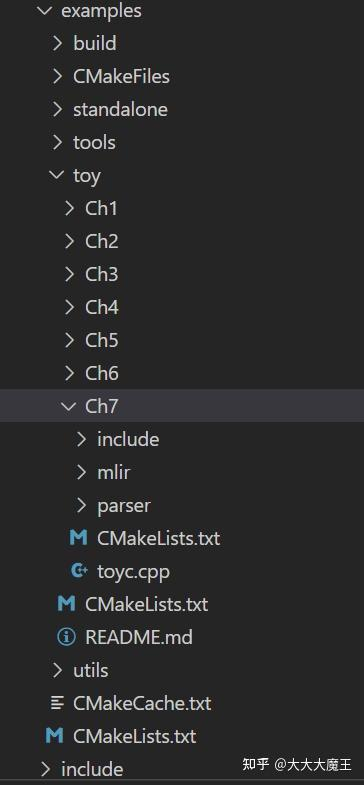
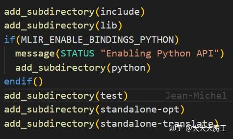
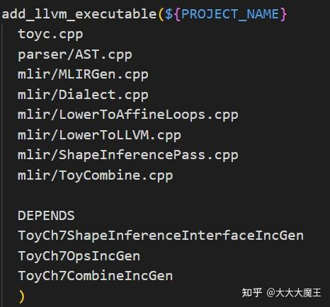

前提是要构建好llvm–project工程，构建过程按照 https:// mlir.llvm.org/getting_s tarted/ 这里的方法操作即可，这里列一下完整过程：
$ git clone https://github.com/llvm/llvm-project.git
$ mkdir llvm-project/build
$ cd llvm-project/build
$ cmake -G "Unix Makefiles" ../llvm \
-DLLVM_ENABLE_PROJECTS=mlir \
-DLLVM_BUILD_EXAMPLES=ON \
-DLLVM_TARGETS_TO_BUILD="host" \
-DCMAKE_BUILD_TYPE=Release \
-DLLVM_ENABLE_ASSERTIONS=ON
$ cmake --build . --target check-mlir
本项目基于官方文档的Ch7将其独立出来，工具是VSCode，文件具体位置在llvm–project/mlir/examples/toy/Ch7

首先创建一个Alone项目，然后将llvm–project/mlir/examples/standalone 中写好的的CMakeLists.txt文件复制进来，这里已经帮我们定义好了llvm和mlir支持，记得把subdirectory改成Alone里的文件夹

再把Ch7文件夹复制进来改名。将Ch7的CmakeLists.txt文件的add_toy_chapter改成add_llvm_executable，下面是集成的cpp，这里的定义会最终变成Dialect

创建build文件夹，由于我的llvm和mlir配置目录不对，在终端运行cmake .. –G Ninja –DLLVM_DIR=˜/llvm–project/build/lib/cmake/llvm/ –DMLIR_DIR=˜/llvm–project/build/lib/cmake/mlir/
直接指定目录
最后cmake ––build .收工。